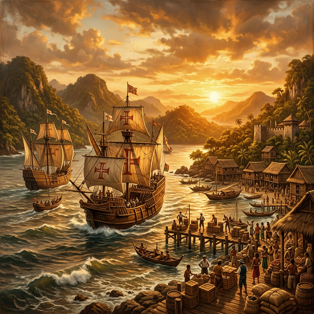
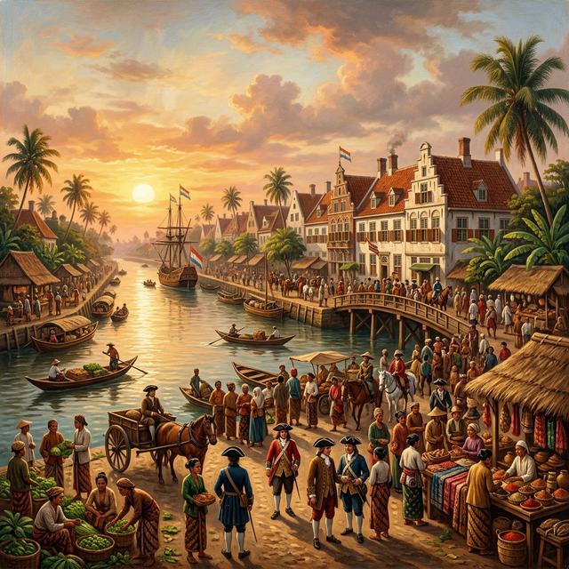

Transformasi Masyarakat
Geser slider untuk melihat perubahan lansekap akibat sistem Tanam Paksa


Sebelum
Sesudah
Dari VOC ke Hindia Belanda: 1800–1942
Setelah VOC resmi dibubarkan pada 31 Desember 1799 akibat kebangkrutan dan korupsi, seluruh wilayah jajahannya dialihkan ke pemerintah Kerajaan Belanda. Dimulailah era pemerintahan kolonial langsung yang berlangsung hingga 1942.
Gubernur Jenderal Herman Willem Daendels (1808-1811) menjadi tokoh penting dalam transisi ini. Ia membangun Jalan Raya Pos (Grote Postweg) sepanjang 1.000 km dari Anyer ke Panarukan menggunakan sistem kerja paksa (rodi), yang menewaskan ribuan pekerja pribumi.
Era ini juga diwarnai intervensi Inggris (1811-1816) di bawah Thomas Stamford Raffles, sebelum akhirnya dikembalikan ke Belanda melalui Konvensi London 1814.

Geser slider untuk melihat perubahan lansekap akibat sistem Tanam Paksa

Dua sistem penindasan yang mengubah struktur sosial masyarakat Nusantara
Gubernur Jenderal Daendels menerapkan sistem kerja paksa untuk membangun infrastruktur militer dan jalan raya. Penduduk pribumi dipaksa bekerja tanpa upah dalam kondisi yang sangat berat.
Proyek paling terkenal adalah pembangunan Jalan Raya Pos (Grote Postweg) sepanjang ±1.000 km dari Anyer (Banten) hingga Panarukan (Jawa Timur). Ribuan pekerja meninggal dalam proyek ini.
Diperkirakan 12.000 pekerja meninggal selama pembangunan Jalan Raya Pos.
Gubernur Jenderal Johannes van den Bosch menerapkan sistem Tanam Paksa pada 1830. Rakyat diwajibkan menyerahkan 20% lahan pertaniannya untuk menanam komoditas ekspor seperti kopi, gula, nila, dan teh.
Dalam praktiknya, lebih dari 50-70% lahan harus digunakan, menyebabkan kelaparan massal di berbagai wilayah Jawa. Sementara itu, Belanda meraup keuntungan luar biasa besar.
Tanam Paksa menghasilkan 823 juta gulden bagi perbendaharaan Belanda (1831-1877).
Perubahan struktur masyarakat akibat kebijakan kolonial